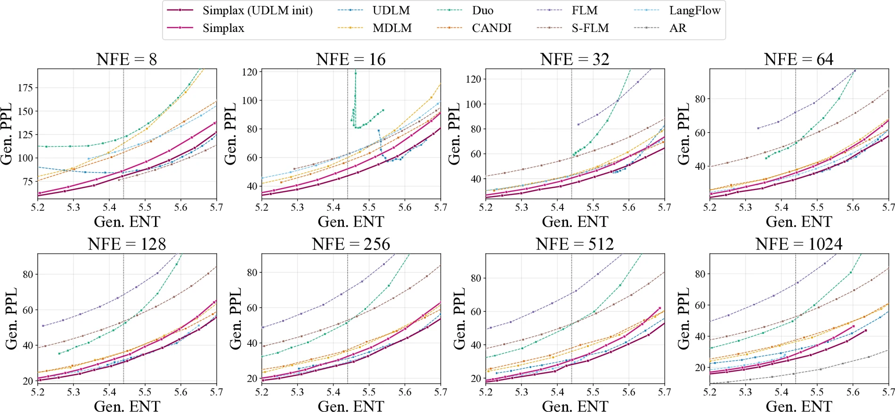
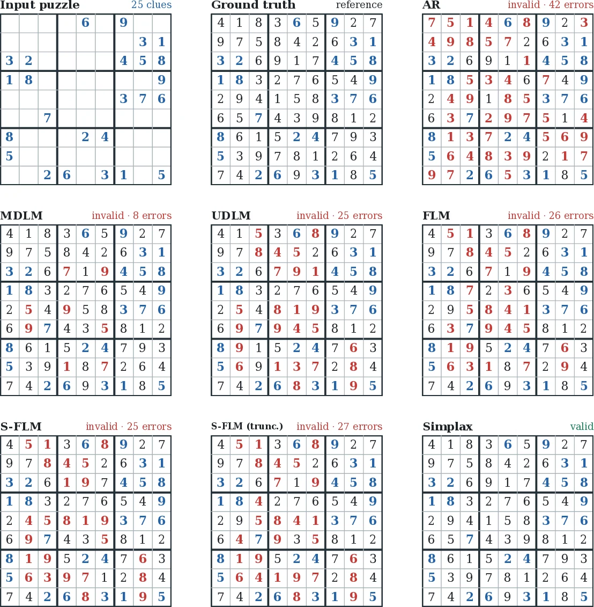

Discrete diffusion models for categorical generation are defined by a corruption kernel, which determines the intermediate state space and the associated reverse prediction problem. We study whether uniform discrete diffusion can be augmented with an explicit continuous state while leaving its categorical corruption process unchanged.
We introduce Simplax, an exact Dirichlet–categorical augmentation that couples each corrupted categorical state with an auxiliary simplex-valued variable while preserving uniform diffusion as its categorical marginal. This yields a tractable Rao–Blackwellized reverse-bridge objective and a stochastic reverse sampler, while retaining the corrupted categorical state as the denoiser input.
Simplax improves the generative perplexity–entropy tradeoff on unconditional OpenWebText generation. On Sudoku, a model trained exclusively on 30-clue puzzles achieves the highest accuracy among the compared methods across all evaluated clue densities, including the minimum uniquely solvable 17-clue regime, and the highest validity in unconditional generation.
Simplax couples a corrupted token zt to an auxiliary simplex state wt through a shifted Dirichlet conditional. Marginalizing wt exactly recovers the original uniform categorical process, and decoding from the simplex is ordinary categorical sampling.
During training, the denoiser still receives the sampled token. The auxiliary simplex state defines a distribution over all categorical bridge anchors, whose reverse-bridge losses can be marginalized analytically. The same hierarchy gives a reverse sampler that carries simplex information between steps without requiring dense simplex vectors as network inputs.
Simplax lies on or near the lower generative perplexity–entropy envelope across inference budgets. With UDLM initialization, it achieves the strongest matched-entropy perplexity among the compared diffusion methods at low and high NFE under both reported evaluators.

All models are trained only on 30-clue puzzles. Simplax obtains the highest conditional accuracy at every tested clue density and reaches 95.30% validity in unconditional generation.

@misc{sakurai2026simplex,
title = {Simplex Relaxation for Discrete Diffusion},
author = {Jinya Sakurai and Patrick Pynadath and Satoshi Hayakawa
and Jaehong Yoon and Xulei Yang and Nancy F. Chen and Xun Xu},
year = {2026},
eprint = {2608.10615},
archivePrefix = {arXiv},
primaryClass = {cs.CL}
}